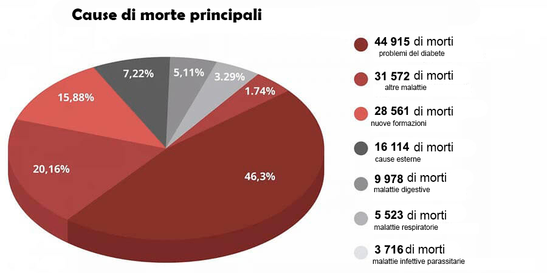

SCOPERTA PROIBITA:In 7 settimane i globuli rossi artificiali curano il diabete, abbassano i livelli di zucchero e aumentano le difese immunitarie in modo incredibile!

Sul set del programma successivo, c'è stato un grande imbarazzo tra i "luminari" della medicina. Uno degli esperti invitati ha improvvisamente iniziato a parlare fuori copione. Con la sua dichiarazione, ha sbalordito il pubblico in studio. Ma sono stati soprattutto i medici a rimanere a bocca aperta.
Il cardiochirurgo ha dichiarato:«Non fate che trasmettere notizie sul virus, ma non dite niente su un problema di cui soffrono ogni anno più di 1,3 milioni di persone! Perché nessuno parla delle malattie endocrine? Perché tacciono tutti sul fatto che esiste già un rimedio per il diabete?»
Il diabete! Ecco chi è il principale assassino delle persone. E voi tutti fingete che non sia così. Nascondete gli strumenti avanzati che risolvono questo problema.
Il diabete è considerato una delle malattie più pericolose. A differenza di molte altre malattie che si verificano nell'uomo, non porta solo problemi di salute temporanei, ma si sviluppa solo in modo sempre più forte, portando gradualmente alla morte. Il diabete è la causa di milioni di morti dolorose. È come una bomba a orologeria che non necessariamente esplode subito, ma ha una probabilità del 100% di esplodere prima o poi. Inoltre, i sintomi che indicherebbero la comparsa di complicazioni fatali sono praticamente inesistenti. Oggi stai bene, domani muori, o una gamba inizia a marcire o un tumore compare dal nulla. Ti ritrovi a morire per via di una malattia praticamente asintomatica, che è lì nell’ombra pronta a colpire.

Le persone muoiono non a causa del virus, ma a causa del diabete e delle complicazioni che questo provoca! Ricordatevelo una volta per tutte!: ha sostenuto Sara Fenu, una degli esperti invitati, ma altri partecipanti le si sono letteralmente avventati addosso, imbavagliandola.
Le statistiche sono scioccanti! L'epidemia ha causato 25mila vite e quasi 50mila persone sono morte di diabete nello stesso periodo.
E la cosa più divertente e triste è che il 75,87% dei casi gravi di complicanze da virus sono persone con diabete! Se non avessero questa malattia, che distrugge senza pietà il sistema immunitario, tollererebbero tutto in modo asintomatico. E quindi questo è il principale gruppo di rischio. E ancora, nessuno ne parla, quindi la domanda: cosa state facendo per curare questa malattia insidiosa?
In studio è iniziato il caos. Esperti e medici delle cliniche italiane hanno iniziato a discutere, interrompendosi a vicenda. La trasmissione è stata interrotta in fretta e hanno lanciato la pubblicità. E Sara è stata cacciata dallo studio dalla sicurezza.
Questo momento è stato tagliato dalla trasmissione. Ma il pubblico in studio ha ricordato questo incidente per molto tempo.
Abbiamo deciso di condurre le nostre indagini e abbiamo rintracciato l’esperta.

Sara Fenu: medico di alta caratura, dottoressa in scienze mediche,
professoressa, specialista leader in complicanze vascolari del diabete.
– Sara Fenu, sembra che tutti i tuoi colleghi sappiano dello scandalo in TV. Come hai fatto a non aver paura di compiere un simile gesto?
– Capivo tutti i rischi, ma non riuscivo più a starmene in silenzio. Non posso stare a guardare mentre uccidono le persone. Sono un medico, ho fatto il giuramento di Ippocrate e lo seguo.
Sono contento che voi mi abbiate contattato, perché posso ripetere le mie parole per i vostri lettori. La pandemia passerà, ci sarà un vaccino, il mondo sopravviverà, come qualsiasi epidemia prima. Ma il virus dell'avidità e della corruzione rimarrà con noi, temo per sempre. I vaccini per questo virus non sono ancora stati inventati.
– A cosa stai alludendo?
– Al fatto che ci sono malattie che nella nostra medicina vengono solitamente curate per anni. Lavoro con le malattie endocrine, mi occupo della riabilitazione di persone che hanno sofferto di gravi complicazioni causate dal diabete. E nel mio campo, è tutto un inganno.
Sono certa che anche nella cura dell'apparato muscolo-scheletrico, del tratto gastrointestinale e di tutto ciò che si desidera si adoperino per lo più in base ai sintomi, alleviando la condizione, ma non restituendo la piena salute.
E la colpa è solo delle società farmaceutiche e dei loro rappresentanti medici, che corrompono i medici in tutto il paese. E ora, quando le persone sono spaventate da ogni cosa, per le aziende invece è festa. Possono vendere separatamente test, disinfettanti e medicinali per ogni sintomo. E in caso di morte, dai la colpa di tutto all'epidemia. Questa cosa mi disgusta.

Il diabete da noi non lo curano
– Quindi stai dicendo che tutti i moderni farmaci per il diabete sono inefficaci?
I farmaci per il diabete che sono ufficialmente prescritti alle persone svolgono una funzione importante: pompare denaro dalle tasche dei pazienti nelle tasche degli oligarchi medici.
Parliamo di farmaci legali. Giudica tu stesso. Il paziente prende una pillola, le sue condizioni migliorano. Il farmaco smette di funzionare e la glicemia aumenta di nuovo. Ecco come funzionano tutti i farmaci. Per sentirti bene, devi cercare una nuova dose.
La cosa principale è capire questo: in caso di emergenza, i farmaci "chimici " sono necessari e importanti. Salvano vite quando è necessario un aiuto urgente. Nella prima guerra mondiale, ad esempio, l'eroina veniva usata sul campo di battaglia per evitare che i feriti morissero di shock da dolore.
Ma se prendi costantemente le pillole, distruggono il corpo. Proprio come l'eroina. Non così rapidamente, ma il principio è lo stesso. E per sbarazzarti degli effetti collaterali, ti verranno vendute più pillole. Sempre più. Più sono, meglio è per le farmacie e le aziende farmaceutiche.
– Ma le persone si curano per anni
– Anche i drogati vivono a lungo. È vita questa?
Quando la pressione sbalza. Quando parliamo di persone anziane, poco più di 50 anni, ci si ritrova con la prostatite e senza potenza sessuale. Quando compaiono stanchezza cronica e obesità, le gambe iniziano a gonfiarsi, difficilmente poi si può camminare e le tue dita diventano insensibili. Ci sono poi disturbi gastrointestinali e calcoli renali dovuti all'intensa escrezione di sali e zuccheri.
Alcune pillole, con un uso a lungo termine, sono generalmente oncogene. Guarda le statistiche sul cancro: questa è una vera epidemia.
Non sto nemmeno parlando di sciocchezze come problemi di sonno, acufene, perdita della vista. L'elenco può essere lungo. C'è solo una ragione: un aumento del livello di glucosio nel sangue e, di conseguenza, il diabete, che nessuno cura. Anche se lo strumento è già lì e mostra ottimi risultati.
Una cura per il diabete che non sarà disponibile nelle farmacie
– Durante le riprese dello show hai provato a parlare di un farmaco rivoluzionario per il diabete, ma sei stata letteralmente buttata fuori dallo studio. Qual è questo rimedio? Perché le farmacie reagiscono al suo nome come i vampiri reagiscono all’aglio?
– Avevo iniziato a preparate del biopreparato« ». Questo è un rimedio unico a base di vitamolecole vegetali vive.
è un’invenzione del centro di biologia molecolare. Viene anche comunemente chiamato "globuli rossi artificiali". Perché stimola la produzione di giovani globuli rossi, che aumentano la risposta alla degradazione del glucosio di oltre 7 volte! Il che porta alla normalizzazione dei livelli di zucchero nel sangue.
stabilizza il metabolismo del glucosio intracellulare per anni. Non deve essere preso tutto il tempo. In sole 7 settimane cura il diabete e il livello di zucchero nel sangue arriva a 4,5 mmol / l per i prossimi 5 anni.
Per lo sviluppo di , il nostro team di scienziati ha ricevuto un premio internazionale in biologia terapeutica. Per una svolta innovativa nel trattamento del diabete.
Voi direte che dopo tale riconoscimento, le farmacie avrebbero dovuto mettersi in fila per il diritto di vendere . Lo stato dovrebbe adottare questo farmaco. Ma no. Completo, mortale silenzio. Nessuno sembrava accorgersi della svolta.
I rappresentanti del settore medico non trattano nemmeno il preparato, anzi lo odiano. Hanno centinaia di nomi di farmaci da vendere per guadagnare. Non hanno intenzione di cambiare. Perché le persone si scordano cosa sia una farmacia dopo 7 settimane di trattamento con .
Ecco perché tanto odio per . Vogliono annebbiarlo. Tuttavia, ci sono riconoscimenti internazionali, certificati, articoli scientifici, migliaia di pazienti soddisfatti. Pertanto, è stata scelta una strategia di boicottaggio. Fingere che non esista alcun preparato del genere. E quando ho iniziato a parlare di lui in diretta, questo ha provocato un'aperta aggressione contro di me.
Autoguarigione del corpo
– Per cosa aiuta ?
Lo scopo principale di , ripristinare la funzione del pancreas del 100%. Questa è la base su cui costruire la salute.
ripristina i vasi sanguigni in 3 momenti:
- Ripristina i recettori dell'insulina nei tessuti dell’organismo, normalizzando così la produzione di insulina nel corpo
- Riduce i livelli di zucchero nel sangue dopo i primi giorni di utilizzo
- Ripristina il livello del "potassio complesso" e allo stesso tempo genera speciali cellule immunitarie che innescano la rigenerazione del pancreas
avvia il processo di rigenerazione e rinnovamento di tutti i tessuti del corpo, dagli organi interni ai vasi sanguigni. Questo ti permette di sbarazzarti di tutti i danni che il corpo è riuscito a ricevere durante la malattia.
Questo processo di auto guarigione è chiamato auto rigenerazione . Questi meccanismi sono stabiliti dalla natura e è funge da catalizzatore, una chiave che "avvia " l’auto rigenerazione.
Vi libererete di 7 malattie in 7 settimane
– Cosa otterrete dopo un trattamento con ?
1. Stabilizzazione del livello di glucosio
Il farmaco ha un effetto estremamente utile, riduce la resistenza all'insulina. Un effetto meraviglioso. I componenti biologicamente attivi del farmaco penetrano direttamente nelle cellule dei muscoli, del grasso e del fegato e li stimolano in modo che inizino a rispondere meglio alla presenza dell'ormone nel sangue. In medicina, questo processo è chiamato formazione di cellule secondarie. Di conseguenza, nel tempo, le cellule iniziano a consumare più glucosio attivo, il che porta a una diminuzione della sua concentrazione nel sangue. Questo è il modo più sicuro per il corpo di bruciare glucosio.
2. Ripristina i vasi sanguigni
L'azione principale di non si limita a rimuovere lo zucchero dal sangue, ma normalizza anche i livelli di glucosio. Inoltre scioglie lo zucchero che è già penetrato nelle pareti dei vasi sanguigni. Acquisiscono nuovamente la capacità di contrarsi e allungarsi. Come se fossero fuoriusciti dal ghiaccio secolare. I coaguli di sangue si dissolvono, i vasi sanguigni vengono eliminati. I piccoli capillari vengono ripristinati. Di conseguenza, la pressione sanguigna di una persona non aumenta, la debolezza e la sonnolenza scompaiono e la guarigione di ferite e tagli migliora.
3. Migliorare le salute di pelle, ossa e muscoli
Anche la pelle gravemente danneggiata viene ripristinata. Le ulcere guariscono, la pelle smette di rovinarsi e di seccarsi. Lo stesso succede con le ossa, la loro composizione sana viene ripristinata, cessano di essere fragili. Il recupero avviene in tutti i tessuti, i muscoli diventano elastici.
4. Migliora la vista
Anche la vista gravemente danneggiata inizierà gradualmente a riprendersi.
- Migliora la qualità della vista da 0.5 a 2.1.
- Stabilizza la pressione sanguigna
- Riduce i sintomi della cataratta
5. Perdita di peso
Il sovrappeso è ciò che aggrava la condizione di un paziente con il diabete di 4-5 volte. Pertanto, una delle azioni principali di è la far perdere peso. Ciò accade per due ragioni. In primo luogo, le cellule iniziano a convertire più attivamente lo zucchero in energia. In secondo luogo, il complesso contiene un forte estratto concentrato di Helianthus tuberosus, che è un potente bruciagrassi naturale.
6. Stabilizza la potenza
Molti diabetici sono impotenti. Una delle azioni sorprendenti di è normalizzare i livelli di testosterone e ripristinare una sana potenza. Anche alla veneranda età di 70 anni, gli uomini sono sorpresi di notare che la potenza sessuale maschile è tornata in loro.
7. Le difese immunitarie funzionano
Migliora l'afflusso di sangue al midollo osseo, che è coinvolto nella produzione di cellule immunitarie. Ciò porta ad un aumento delle difese immunitarie.
Le difesi immunitarie non sono solo una protezione contro i virus. La funzione principale di una forte immunità è quella di proteggere dalle cellule tumorali. Una forte difesa immunitaria riconosce e distrugge le cellule tumorali nel tempo. Protegge dal tumore a tutti gli effetti.
Le difese immunitarie funzionanti almeno al 50% bastano come barriera insormontabile contro i virus. E anche questo è molto importante, soprattutto oggi.
Il presidente del sindacato dei farmacisti ha riattaccato per aver sentito parlare di
GIorgio Capozzi. Presidente del sindacato farmacisti.
Abbiamo chiamato il più noto dei farmacisti per chiedere come mai nessuna delle farmacie vende .
– GIorgio Capozzi, Salve! Lei ha mai sentito parlare di ? Perché non è in vendita?
– Perché dovete provocarmi!? Non ho intenzione di rispondere a queste domande!!! Non sono affari vostri!
– Bip… Bip…
Come ricevere
– Dopo una simile conversazione con il capo farmacista del paese, è stato chiaro che il farmaco non era e non sarebbe stato nelle farmacie. Ma si può prendere lo stesso, giusto?
– Sì, tutti i cittadini del paese possono ordinare online direttamente dalla fabbrica.
– Perché ordinare è possibile solo on line?
Per tre motivi principali:
- Garanzia di qualità. verrà inviato direttamente dalla fabbrica
- Difesa dagli speculatori. Nessuno potrà mettere un sovrapprezzo
- Consegna rapida
Sconto regionale per anziani
È attivo in tutte le regioni programma di fondi di sostegno sociale. Grazie a questo programma si può ordinare con uno sconto. Fa parte del programma preferenziale di prevenzione del diabete.
Lo sconto è concesso principalmente alle persone di età superiore a 47 anni che vivono in regioni con una situazione epidemiologica grave.
Поэтому я настоятельно рекомендую: не теряйте время! Второго такого шанса не будет. Неизвестно сколько продлится программа, и на сколько хватит запасов .
Riceverete ora!
Per ricevere con il prezzo speciale, sarà necessario solo il numero di cellulare.
Indica il tuo numero nel modulo di richiesta e clicca sul pulsante "Ricevere ".
Importante! Solo 1 modulo per 1 numero di telefono!
Ora le richieste vengono accettate ed elaborate 24 ore su 24. Ma a causa della mole di lavoro pesante, potrebbe essere necessario attendere un po '.
Attenzione!
Assicurateviche sul sito ci siaogni garanzia:
L'ologramma di sicurezza è una garanzia di qualità al 100%. Indica che sei sul sito ufficiale e ti verrà inviato il vero e ti verranno forniti i consigli e il supporto necessari.
Commenti